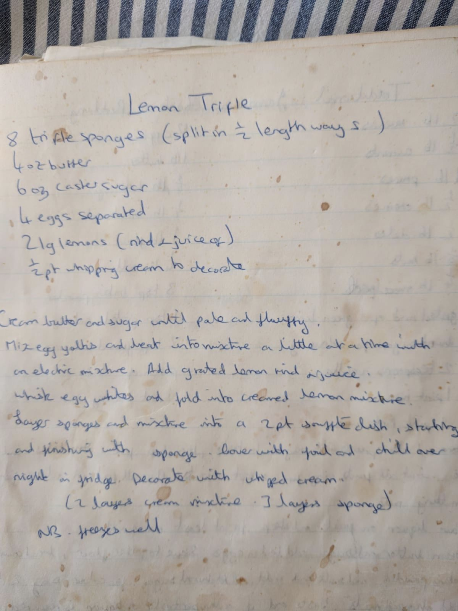

Mum's Lemon Trifle

Before you start needs overnight chilling in the fridge.
Ingredients
Method
- Cream the 120g butter and 180g caster sugar until pale and fluffy.
- Mix the 4 egg yolks and beat into mixture a little at a time with an electric mixer.
- Add the grated rind and juice of the 2 large lemons.
- Whisk the 4 egg whites and fold into creamed lemon mixture.
- Layer the 8 trifle sponges and mixture into a 2 part souffle dish, starting and finishing with sponge (i.e. 2 layers of cream mixture and 3 layers of sponge).
- Cover with foil and chill overnight in the fridge.
- Decorate with the 300ml whipped cream.